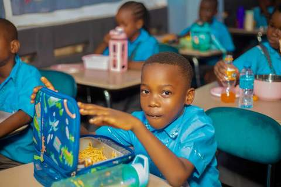

Home / Krio
Wɛlkɔm na Gaddiel Nɔsri ɛn Prɛparatri Skul
“Ep All Pikin Dem Fo Betteh”: wi de ya fɔ ɛp ɔl pikin, nɔto jɔs sɔm.
[DRAFT] This Krio page is a first draft. Please ask a fluent Krio speaker to check it before relying on it. Read the website in English.
Wi skul
Gaddiel Nɔsri ɛn Prɛparatri Skul de na 143 Fort Strit, Fritɔŋ. Wi skul de kia fɔ pikin dɛm lɛk wan famili. Ya, ɛvri ticha sabi ɛvri pikin in nem. Dɛn de tich am wit peshɛns, ɛn dɛn de ɛnkɔrej am fɔ du di bɛst we i ebul.
Wi opin di skul na 13 Sɛptɛmba 2021 wit jɔs tri pikin. Tide, wit Gɔd in gudnɛs, wi gɛt 98 pikin.

Wetin mek pɛrɛnt dɛn de pik Gaddiel
Smɔl klas dɛm
Ɛvri pikin de gɛt in yon atɛnshɔn frɔm di ticha.
Wi de wach ɛvri pikin
Wi de fala ɛvri pikin in lanin ɛn in biyevyɔ klos-klos, ɛn wi de tɛl di pɛrɛnt dɛm.
Sef ples lɛk famili
Wi skul na fren-fren ples, sef ples, we pikin ɛn pɛrɛnt dɛn kin fil at om.
Ticha dɛm we gi dɛnsɛf
Di ticha dɛm sabi ɛvri pikin ɛn in famili.
Aw fɔ put yu pikin na wi skul
Kɔntakt wi
Kɔl wi, sɛn mɛsej na WhatsApp, ɔ fil di fɔm fɔ buk visit.
Kam visit di skul
Mɔnde to Fraide, 8 o’klɔk na mɔnin to 3 o’klɔk na ivintɛm. Mit di ticha dɛm ɛn si di klas dɛm.
Fil di admishɔn fɔm
Fil am na intanɛt, ɔ go tek am na di skul ɔfis.
Bay di yunifɔm ɛn bigin
Bay di yunifɔm na di skul ɔfis. Wɛlkɔm na Gaddiel!
Di yunifɔm
- Gyal pikin: blu blaus ɛn gre skɛt
- Bɔy pikin: blu shɔt ɛn gre trɔsis
- Ɔlman: blak shu ɛn gre sɔks
Yu kin bay ɔl di yunifɔm na di skul ɔfis.
Wi awa dɛm
- Mɔnde to Fraide: 8:00 AM – 3:00 PM
- Satide ɛn Sɔnde: skul lɔk
143 Fort Strit, Fritɔŋ, Siera Liɔn.
Wi go gladi fɔ si yu
Kam visit wi wit yu pikin.